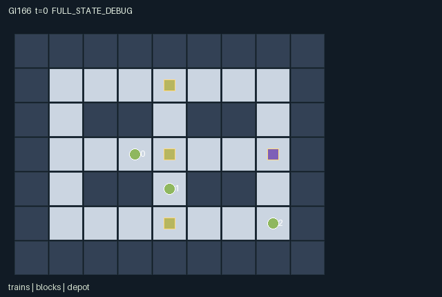

GI166 / SPATIAL
调车场货权
列车按轨道与入口方向移动，短期区段预约、释放和切换改变伙伴可进入的线路。
Original saved demonstration
Recorded native state, often authored scripts or interventions; information scope and failures are preserved in the original provenance. This is a saved demonstration, not live browser play.

Release verification episode
Untrained uniform legal actions. Actual JAX state sampled along the full original episode; full-state debug camera. No human performance or learning claim.

Run this game
crucibles play --game 166
Start Python locally, then open the address printed by the terminal. Installation, multiplayer, takeover and keyboard controls →
Objective, rewards & ending
Exact task contract
{
"objective": "Deliver each controlled train cargo at the single depot while trading own urgency costs against competing track access.",
"natural_termination": "Joint natural completion exactly when all three cargos are delivered. Otherwise time limit 80; no unsupported early failure claim.",
"interaction": "Physical occupancy, rotating same-tick priority, four-tick reservations, switch orientation and one shared service cooldown alter peers feasible routes. Yield binds future movement and releases claims.",
"observation_access": "Track layout, physical train/block/depot states, claims, timers and events are public. Only own urgency is observed; scene has no urgency attribute. Inactive delivered trains retain only no-op."
}Declared per-step reward bounds: -5 to 18. Observability: partially_observable.
Rules
- Movement follows actual track and block entry axis; trains cannot enter an occupied cell or a block reserved by a peer.
- Claims last four ticks and can be released; expiry precedes new requests. Simultaneous control and movement use rotating agent priority.
- Toggle the nearest block within Manhattan distance one if unclaimed or yours. Equal-distance block ties use array order.
- Yield releases owned reservations and commits to two subsequent decisions without movement.
- Only a train at the depot can deliver; a delivery sets a shared service cooldown of two.
- Each active train pays its private urgency each tick; a successful claim costs one; delivery grants 12 plus twice own urgency.
- All cargo delivered is natural completion; H=80 otherwise. Raw terminal states absorb without reset.
Original mechanism document (historical status wording retained)
# Switchyard Claims
The three trains control their own movement, reservation, switching, release, yielding and delivery. There is no dispatcher policy. Tracks form three horizontal routes joined at x=1,4,7, with actual switch blocks at x=4. Agent starts are (3,3), (4,4), (7,5); the shared depot is (7,3). The map is public.
A block can have one owner. Beginning-of-step expiry releases claims; explicit release or yield follows; then claims and toggles are processed in priority (t+k) mod 3. A claim lasts four recorded ticks including its grant state. Entry requires the selected axis and no peer reservation. Legal masks use the input state, including old occupancy, so an old occupied cell cannot be entered even if its occupant moves away. Updated occupancy also blocks entry and resolves simultaneous targets. A peer can change a switch or claim after masking; that can block an otherwise legal move. No swaps or collisions are silently permitted.
Yield is a credible two-decision restriction: subsequent movement masks remain false until its timer has elapsed. Release without commitment preserves the option to move later. Nearest adjacent switch ties use lowest block index. Delivery is explicit at the shared depot; its cooldown=2 makes delivery unavailable for the next two input states. Agents with completed cargo become inactive and may only wait. All three delivered is natural completion, not an inferred optimality or solvability assertion.
Different private urgencies change delay costs. A train can yield for a faster peer, reserve a junction before approaching, change the axis, or take a longer track route. These are source-derived strategic alternatives, without claims that a learner discovers them. Public reservations and binding commitments let another train react over several ticks; this is not three independent routes.
All output observations are raw bounded integers cast once to float32. Urgency is private and absent from scene attributes. Train visibility excludes delivered entities while their final position and status remain public in observations. Events describe the last transition; absorption retains that last terminal record and does not create a new event.
Declared source invariants: active train positions are unique traversable rail cells; block owner is -1..2; TTL is 0..4; axis is 0/1; yield and depot timers are 0..2; all resource/timer arithmetic is int32. The no-op is legal in every state. Invalid/out-of-range or masked requests become no-op deterministically. Claimed and blocked events describe actual effective transitions, not the original unvalidated request.
Authorship and status: gpt-6-astra / max, original attempt_00, AUTHORED_NOT_EXECUTED, source_split=train, final_test_used=false. This identity is the assigned author self-report; root retains independent dispatch evidence. Source SHA256: 0cc9d5510948860eb0d3a62219138aeb88583506f997f50759e7df1f2a7823fb. A/O/U/H = 3/51/10/80.
The author has not imported or executed candidate.py, JAX or NumPy; no reset, raw_step, observe, legal_actions, JIT, vmap, rollout, training, rendering, browser, remote execution or additional model/API call occurred. Only supplied trusted stdlib AST/manifest/scene checks and literal metadata checks were run. AST/schema acceptance is not R0, numerical parity, gameplay validation, learnability or transfer. Eager/JIT/vmap parity remains unmeasured, with no tolerance invented.
All state small signed fields use int32; bool flags remain bool. Reset keys are trusted-interface inputs, not duplicated as mutable PRNG state. Clock increments once for a nonterminal call. Natural termination takes priority over horizon; truncated=(t>=H)&~terminated. An already-terminal call preserves every leaf and observation, returns zero reward and all dones=true, retaining the real causes. The source does not autoreset. Native map layout is explicitly public. Literal per-role observation and rendering masks are included in the manifest and source.
The five supplied upstream reference files were byte-read for SHA256 integrity only, not semantically read or copied. No upstream source snippet was used. The assigned community ecosystem requirements refer to JaxMARL multiagent interfaces, Pgx board-game APIs, Craftax game/world mechanics, and PureJaxRL / Craftax PPO algorithm integration as distinct concerns. This original game kernel does not substitute any of those PPO implementations for the frozen learner. Runtime adapter/replay/animation are later integration responsibilities; no generated animation or empirical acceptance is claimed.
Input provenance is exact in author_input_freeze.json: all twenty enumerated files plus final batch authority and scope clarification. Current 166-169 requests/designs control identity; inherited requirement games 154-157 is retained only as the byte-exact product/interaction requirement source. No prior source, result, payoff, selection, hidden/final-test input or parent history was read.
The playthrough is a finite literal hypothesis. Its original paired intervention changes exactly one actor-action component, uses the same seed/prefix and same-length branches, and states the source-derived delay. Later negative, zero, blocked, illegal or early-terminal evidence must remain unchanged. No author-executed solvability or success claim is made.
Interface source lines: reset=18, observe=71, legal_actions=53, raw_step=76.
Literal source evidence:
- candidate.py:42: def destination_ok(self, s, i, p, direction):
- candidate.py:92: release = (a[i] == 6) | (a[i] == 9)
- candidate.py:102: claim = (a[i] == 5) & available
- candidate.py:106: toggle = (a[i] == 7) & available
- candidate.py:114: ok = moving & self.destination_ok(n, i, p, a[i])
- candidate.py:121: deliver = (a[i] == 8) & (n["cooldown"][0] == 0) & ~n["delivered"][i] & jnp.all(n["pos"][i] == n["depot_pos"][0])
- candidate.py:125: reward = -(~s["delivered"]).astype(jnp.int32) * s["urgency"] - n["claimed"].astype(jnp.int32) + n["delivery_event"].astype(jnp.int32) * (12 + 2 * s["urgency"])
- candidate.py:126: n["terminated"] = jnp.all(n["delivered"])
- candidate.py:131: n = {k: jnp.where(s["done"], s[k], n[k]) for k in s}
Commands
Roles & abilities
agent_0 Train 0 with private cargo urgency
agent_1 Train 1 with private cargo urgency
agent_2 Train 2 with private cargo urgency
Observation permissions
Training receives only the original observation rows. Role cameras use declared visibility; debug cameras are explicitly marked. Local benchmark records log debug exposure and role takeover history.
Exact observation layout
[
{
"slice": [
0,
2
],
"meaning": "Own train x,y.",
"visibility": "self"
},
{
"slice": [
2,
3
],
"meaning": "Own urgency integer 1..3; independently sampled at reset; never revealed by entity attributes.",
"visibility": "self"
},
{
"slice": [
3,
4
],
"meaning": "Own delivered flag.",
"visibility": "self"
},
{
"slice": [
4,
5
],
"meaning": "Own remaining binding yield ticks.",
"visibility": "self"
},
{
"slice": [
5,
6
],
"meaning": "Public elapsed decision ticks.",
"visibility": "public"
},
{
"slice": [
6,
12
],
"meaning": "All train x,y pairs in agent order, including retained finished positions.",
"visibility": "public"
},
{
"slice": [
12,
15
],
"meaning": "All delivered flags.",
"visibility": "public"
},
{
"slice": [
15,
18
],
"meaning": "All binding yield timers.",
"visibility": "public"
},
{
"slice": [
18,
24
],
"meaning": "Three block x,y pairs.",
"visibility": "public"
},
{
"slice": [
24,
27
],
"meaning": "Block reservation owner -1 or agent index.",
"visibility": "public"
},
{
"slice": [
27,
30
],
"meaning": "Block reservation ticks remaining.",
"visibility": "public"
},
{
"slice": [
30,
33
],
"meaning": "Block entry axis: 0 horizontal, 1 vertical.",
"visibility": "public"
},
{
"slice": [
33,
35
],
"meaning": "Single depot x,y.",
"visibility": "public"
},
{
"slice": [
35,
36
],
"meaning": "Depot service cooldown.",
"visibility": "public"
},
{
"slice": [
36,
39
],
"meaning": "Successful moves in the last nonabsorbing transition.",
"visibility": "public"
},
{
"slice": [
39,
42
],
"meaning": "Claims granted in the last nonabsorbing transition.",
"visibility": "public"
},
{
"slice": [
42,
45
],
"meaning": "Originally legal move requests blocked by same-tick peer control or occupancy.",
"visibility": "public"
},
{
"slice": [
45,
48
],
"meaning": "Deliveries in last nonabsorbing transition.",
"visibility": "public"
},
{
"slice": [
48,
51
],
"meaning": "Own stable identity one-hot; roles share action semantics.",
"visibility": "self"
}
]Entity visibility & attributes
[
{
"id": "trains",
"kind": "agent",
"count": 3,
"position": [
"pos"
],
"active": [
"agent_active"
],
"visibility": [
"agent_vis"
],
"attributes": [
{
"state_path": [
"delivered"
],
"meaning": "Cargo delivery complete",
"display": "flag"
},
{
"state_path": [
"commit"
],
"meaning": "Binding yield ticks remaining",
"display": "number"
}
]
},
{
"id": "blocks",
"kind": "gate",
"count": 3,
"position": [
"block_pos"
],
"active": [
"block_active"
],
"visibility": [
"block_vis"
],
"attributes": [
{
"state_path": [
"owner"
],
"meaning": "Reservation owner, -1 means unclaimed",
"display": "category"
},
{
"state_path": [
"ttl"
],
"meaning": "Reservation ticks remaining",
"display": "number"
},
{
"state_path": [
"axis"
],
"meaning": "Permitted entry axis: 0 horizontal, 1 vertical",
"display": "category"
}
]
},
{
"id": "depot",
"kind": "landmark",
"count": 1,
"position": [
"depot_pos"
],
"active": [
"depot_active"
],
"visibility": [
"depot_vis"
],
"attributes": [
{
"state_path": [
"cooldown"
],
"meaning": "Remaining service cooldown",
"display": "number"
}
]
}
]Actual verification & provenance
Per-game execution receipt
{
"game": "gi166",
"status": "PASS",
"verification_revision": 2,
"source_sha256": "0cc9d5510948860eb0d3a62219138aeb88583506f997f50759e7df1f2a7823fb",
"seed": 20261101,
"runtime": {
"jax": "0.4.38",
"numpy": "1.26.4",
"devices": [
"TFRT_CPU_0"
]
},
"dimensions": {
"num_agents": 3,
"observation_size": 51,
"num_actions": 10,
"max_steps": 80
},
"checks": {
"eager_reset": {
"status": "PASS",
"seconds": 1.7403695583343506
},
"observation_spaces_legal_masks": {
"status": "PASS",
"seconds": 1.2038724422454834
},
"eager_step": {
"status": "PASS",
"seconds": 1.411172866821289
},
"jit_reset": {
"status": "PASS",
"seconds": 0.2564232349395752
},
"jit_step": {
"status": "PASS",
"seconds": 2.0816216468811035
},
"eager_jit_integer_parity_float_measurement": {
"status": "PASS",
"seconds": 0.0013506412506103516
},
"jit_vmap_reset": {
"status": "PASS",
"seconds": 0.2509334087371826
},
"jit_vmap_step": {
"status": "PASS",
"seconds": 2.5007996559143066
},
"outer_autoreset_api": {
"status": "PASS",
"seconds": 2.0640008449554443
},
"full_original_horizon_episode_and_render": {
"status": "PASS",
"seconds": 1.806354284286499
}
},
"human_scores": null,
"browser_controls": "PENDING",
"failures": [],
"elapsed_seconds": 13.855777025222778,
"float_parity_max_abs": 0.0,
"numerical_parity": "EXACT",
"raw_terminal_absorbing": "PASS",
"terminal_outer_reset": "PASS",
"episode_steps": 80,
"scripted_random_returns": [
-243.0,
-102.0,
-30.0
],
"terminal": true,
"demo_information": "FULL_STATE_DEBUG",
"demo_frames": 28,
"render_roles_checked": 3
}Chromium control verification
{
"game": "gi166",
"status": "PASS",
"human_scores": null,
"engineering": true,
"checks": [
"catalog_selected_and_real_native_reset",
"keyboard_native_direction_command",
"dom_queue_and_native_step",
"second_participant_ownership_and_native_joint_step",
"all_roles_individually_controllable_no_role_cap",
"explicit_debug_camera",
"release_to_pure_ai_without_reset",
"close_session_preserves_log"
],
"ui_sha256": "96243f9de144b80b5e20a114330e2206bdcd58d3efc9c6f13bbc08b95cacc14d",
"keyboard_action_id": 2,
"seconds": 8.126903772354126
}Original identity and file hashes
{
"id": 166,
"key": "gi166",
"title": "调车场货权",
"summary": "列车按轨道与入口方向移动，短期区段预约、释放和切换改变伙伴可进入的线路。",
"tags": [
"轨道协调",
"空间预约"
],
"family": "spatial",
"dimensions": {
"num_agents": 3,
"observation_size": 51,
"num_actions": 10,
"max_steps": 80
},
"source_sha256": "0cc9d5510948860eb0d3a62219138aeb88583506f997f50759e7df1f2a7823fb",
"manifest_sha256": "ad86a0a4673a387cd0bcf27e6cbdfe9497cf8521416d60a6014437be9537d17b",
"files": [
{
"file": "candidate.py",
"sha256": "0cc9d5510948860eb0d3a62219138aeb88583506f997f50759e7df1f2a7823fb",
"bytes": 7818,
"origin": "work/exp_2/game_incubator_v3/community_games222_225_visualization_root222_v1/native154_candidate/registry/v2/games/game-v3-00166/candidate.py"
},
{
"file": "manifest.json",
"sha256": "ad86a0a4673a387cd0bcf27e6cbdfe9497cf8521416d60a6014437be9537d17b",
"bytes": 11843,
"origin": "work/exp_2/game_incubator_v3/community_games222_225_visualization_root222_v1/native154_candidate/registry/v2/games/game-v3-00166/manifest.json"
},
{
"file": "scene.json",
"sha256": "dfb17b2f690194ebdaf06d1e0abddb591f818a07021f442f996853ab6009ed50",
"bytes": 7284,
"origin": "work/exp_2/game_incubator_v3/community_games222_225_visualization_root222_v1/native154_candidate/registry/v2/games/game-v3-00166/scene.json"
},
{
"file": "mechanism.md",
"sha256": "a7213504ffba37c81dd4fa73b685556ea4664e8d16e4ea3f2731f6c3506ec0f3",
"bytes": 6196,
"origin": "work/exp_2/game_incubator_v3/sources/game-v3-00166/attempt_00/mechanism.md"
},
{
"file": "playthrough.json",
"sha256": "0dbfe28e5998492e68c1710719dff03398bdc450a2f1556786ea72f6c0afc1a6",
"bytes": 2348,
"origin": "work/exp_2/game_incubator_v3/sources/game-v3-00166/attempt_00/playthrough.json"
}
],
"original_status": "NATIVE154_REFERENCE",
"original_saved_replay": true,
"release_validation": "PASS",
"human_scores": null,
"browser_validation": "PASS"
}